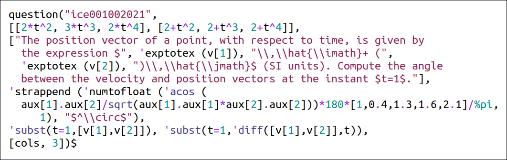

I have written a Maxima program, quiz.mac, to help create the exams.
It has a function question
that inserts questions into a dictionary.
The structure of that function is:
The following example shows a question which is solved as in the Maxima example given in the previous slide.
A value for the variable v[1] is chosen from the list of 3 expressions [2*t^2, 2*t^3, 2*t^4] and a value for v[2] is chosen from the list [2+t^2, 2+t^3, 2+t^4].
The results of the two commands in the second to last line are saved into the auxiliary variables aux[1] and aux[2].